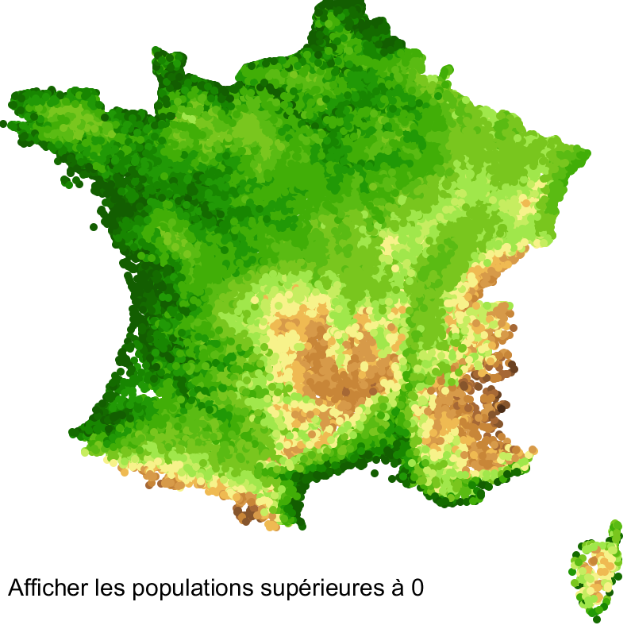
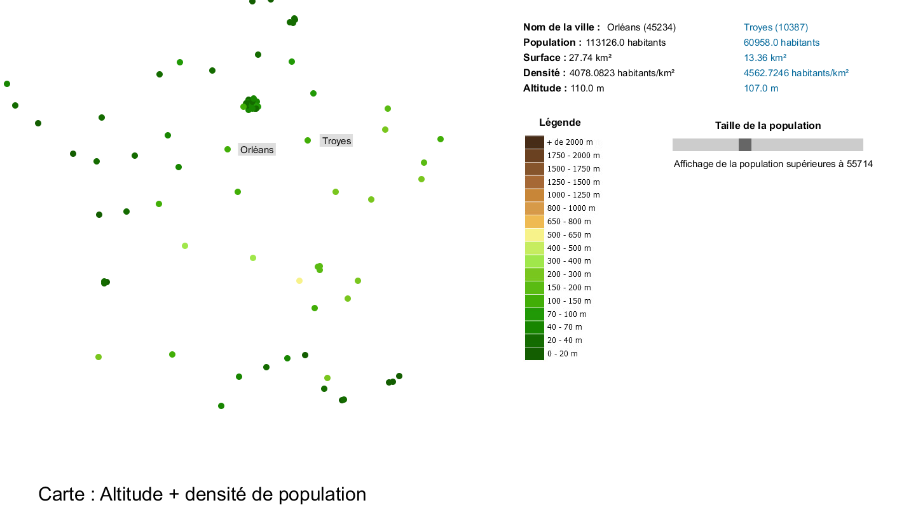
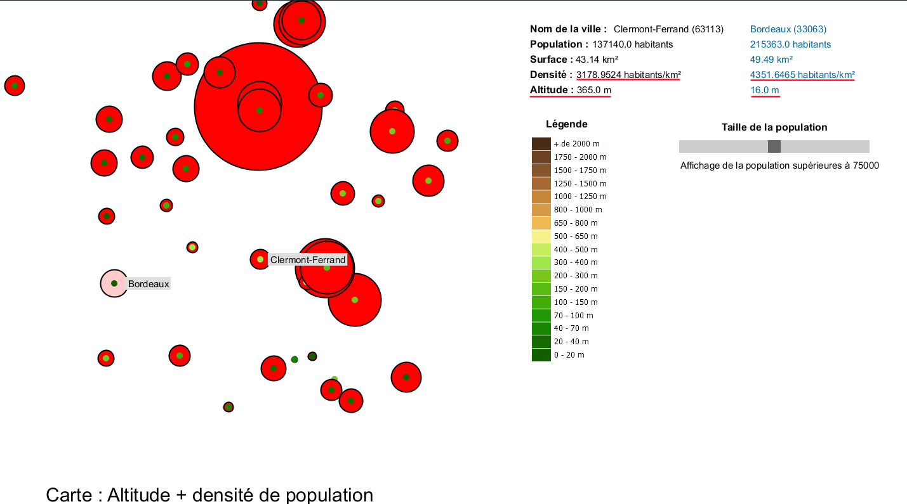

Durant ces travaux pratiques de NIHM sur la visualisation, nous avons dû réaliser une visualisation de données avec une possibilité d'interaction sur celles-ci.
Pour faire cela, nous avons à notre disposition :
J'ai décidé d'utiliser la carte des altitudes au départ. En effet, je souhaite savoir grâce aux données fournies et à comment je les disposes, s'il y a plus de personnes en altitude ou non. Mais encore, comment sont répartis les populations dans la France par altitude. Ci-dessous, nous retrouvons un visuel de la carte de départ.
Pour l'altitude : j'ai choisi d'utiliser des ellipses pour la représentation, elles sont coloriées à l'intérieur et sans bordure. Cela permet de colorier la carte avec toutes les altitudes si l'utilisateur choisi d'afficher toutes les villes.
Pour la densité de population : j'ai choisi d'utiliser des ellipses, avec des bordures, variant de taille selon la densité. Si une densité est forte, l'ellipse aura une taille importante et inversement.
J'ai tout d'abord décidé de prendre en compte les altitudes, afin de voir si une population est plus présente là où il y a de fortes altitudes. On se base sur la carte des altitudes (voir sources) pour avoir une bonne représentation au niveau couleur.
Création du slider pour pouvoir choisir le nombre de population à afficher sur notre carte. J'ai choisi de mettre ce slider pour faciliter l'interaction de l'utilisateur.
Il est possible d'afficher les noms en passant la souris sur les différentes villes. Pour cela, nous créons un rectangle à côté du cercle où notre curseur se situe puis nous affichons le nom de la ville dans celui-ci. De plus, sur la droite de notre affichage, nous avons différentes informations. J'ai pensé à afficher le nom et le code postal de la ville où notre curseur est (sans prendre en compte le clique pour le moment), la population de cette ville, sa surface, sa densité et surtout son altitude.
Le fait de comparer deux villes me permet de savoir quelle ville à le plus de population ou la plus grande altitude. Pour comparer, si notre utilisateur clique sur une des ellipses, on va sauvegarder le clique et garder l'affichage des informations de cette ville. Il va ensuite pouvoir placer son curseur sur une autre ville pour pouvoir comparer ensuite. A noter que si l'utilisateur décide de réduire l'affichage au niveau de la population, si notre ville sauvegardée à sa population inférieure à celle choisi par l'utilisateur, la sauvegarde est perdu.
Enfin, on affiche la légende pour connaitre les altitudes prisent en compte dans la visualisation. Cela permet à notre utilisateur de faire le lien avec la population et l'altitude.
Par la suite, ajout de la densité de population pour avoir un meilleur avis sur notre question posée précedemment. On remarque que selon l'altitude, la densité de population sera différente, moins il y a d'altitude, plus il y aura de personnes.
Différentes sources ont été utilisées pour mener à bien cette visualisation.